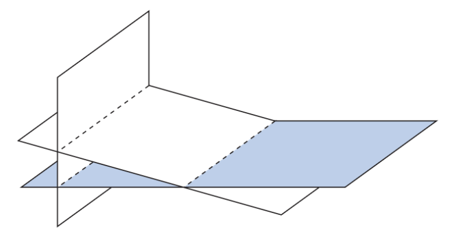
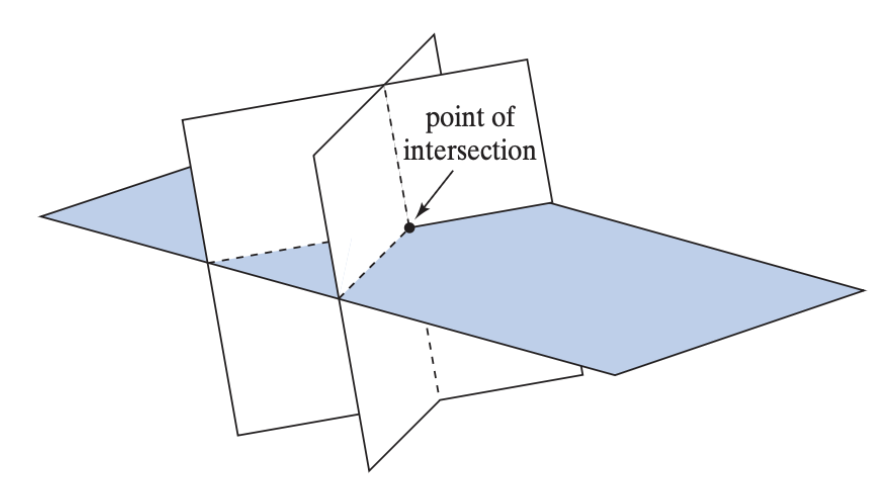
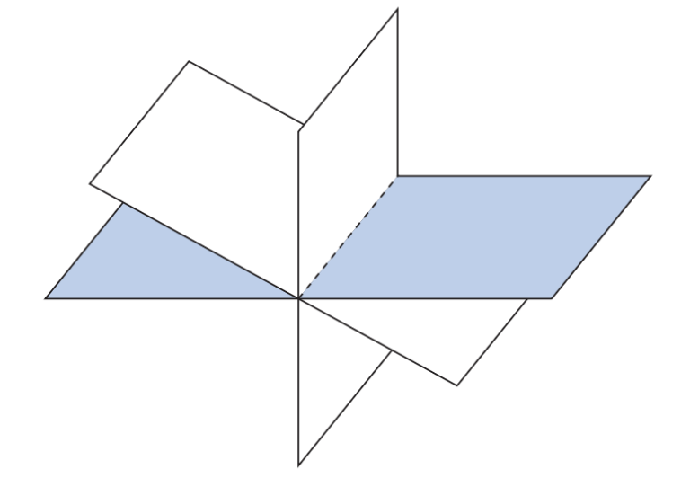

Let's start super basic with a single linear equation.
Two variables:
Three variables:
variables:
In two variables, the equation represents a line, that is solutions to the equation form a line. It is equivalent to the form.
In three variables, the equation represents a plane. This is where the physical imagery ends, but the geometric intuition can extend to arbitrary number of variables.
The number on the right hand side (RHS) of these equations contain information about the displacement of the line/plane. For example, if the RHS is zero, then the line/plane contains the origin.
We can combine linear equations to form a systems of linear equations.
A linear system in variables and unknowns is a collection of linear equations, each with variables:
The solution to a linear system in variables is a point which satisfies every equation in the system.
is a solution to
The geometric interpretation is that a system of equations is the intersection of different lines/planes. Depending on how these lines/planes intersect, we can have different number of solutions.



We will learn through the study of linear algebra why this is the case. For a direct answer, think about how we can get new solutions from existing ones, which will contradict finiteness of solutions. Hint: is the average of two solutions a solution?